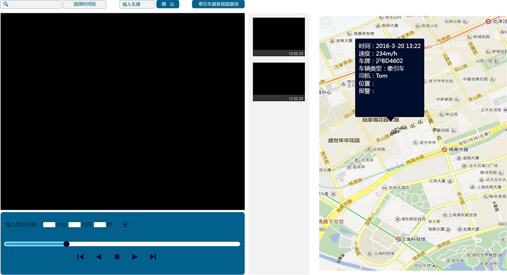

Toggle navigation
上海市快速路养护监管系统
首页
基础数据
停车场管理(demo)
车辆管理
RFID监测点管理
包件信息管理
电子围栏管理
监管规则管理
计划管理
养护作业计划
作业线路管理
布点计划
进度管理
养护进度监控
实时监控
养护日志管理
历史数据
历史轨迹查询
历史视频查询(demo)
异常查询
报表查询
牵引车辆位置报表(demo)
养护车辆作业区域
养护车辆作业情况
养护车辆超速
系统管理
用户管理
权限管理
网络状态图
欢迎， 领导
Profile
Inbox
7
Settings
Log Out
历史数据
历史视频查询
